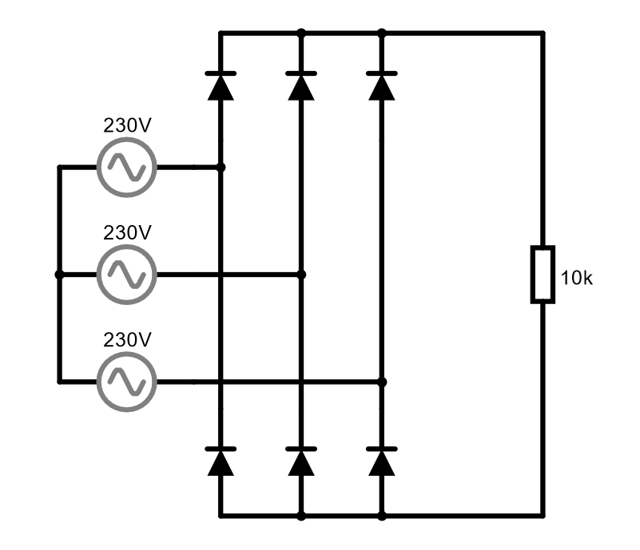

2. El díode rectificador¶
Els díodes rectificadors estan especialitzats en convertir el corrent altern en un corrent directe que la majoria dels dispositius electrònics necessiten.
Aquests díodes poden rectificar el corrent altern que arriba a les nostres cases, amb tensions relativament altes (fins a 311 volts màxims per a una tensió alternativa de 230 volts efectius).
També es troben en transformadors d’alta freqüència que utilitzen gairebé tots els equips d’alimentació de fonts, carregadores i tauletes de telèfons intel·ligents, televisió, etc.
Diode del rectificador de mitja onada¶
Aquest és l’esquema més senzill que es pot utilitzar per convertir el corrent altern en el corrent directe. Aquest rectificador només permet que el semicicle positiu de la tensió alternativa passi i bloqueja el semicicle negatiu.
Aquest esquema té les molèsties que el corrent de sortida és pulsant i la meitat de la tensió d’entrada es perd.
Rectificador d'ones completes¶
Aquest esquema aconsegueix transformar tant els semi -cicles positius com les semi -cicles negatives de la tensió en tensió positiva en la sortida.
Per funcionar, utilitzeu dos díodes per a cada línia de corrent altern. En sistemes de tres fases, amb tres línies de tensió, s’utilitzen sis díodes en total per rectificar la tensió.
A les simulacions següents podeu veure dos paràmetres de díode. Tots dos són equivalents elèctricament i només difereixen en la posició dels díodes en el dibuix.
Diode rectificador amb filtre¶
El rectificador d’ones completes aconsegueix aprofitar tota la tensió alternativa, però encara hi ha valls de tensió en què la sortida val zero. Si volem tenir una tensió contínua a la sortida, podem utilitzar un condensador que emmagatzemi suficient càrrega elèctrica per poder alimentar la càrrega de sortida durant el temps que la tensió rectificada té valors de baixa tensió.
Es tracta d’un circuit àmpliament utilitzat en fonts d’aliments de tot tipus de dispositius electrònics. És interessant verificar com el corrent que absorbeix el generador alternatiu és un corrent pulsant. Això produeix distorsions en el corrent de la xarxa d’alimentació afegint l’efecte de diversos dispositius electrònics de moltes cases.
Exercicis¶
Dibuixeu un circuit de rectificador d’ona mitjana que rectifiqui la tensió altern de 230 volts i alimenta una resistència de 100 ohms.
Dibuixa sota el circuit la forma d’ona de la tensió en la resistència.
Recordeu que al simulador el gràfic verd representa la tensió i el gràfic groc representa el corrent.
Dibuixa un circuit complet de rectificador d’ones basat en els valors de l’exercici anterior.
Dibuixa sota el circuit la forma d’ona de la tensió en la resistència.
Realitza al Circuit Simulator un rectificador d'ona complet d'una línia de tres fases com la que apareix a la imatge següent.

El generador superior ha de tenir un "desplaçament de fase" de 0 graus (no cal canviar -lo). El generador mitjà ha de tenir un "desplaçament de fase" de 120 graus. El generador següent ha de tenir un "desplaçament de fase" de 240 graus.
Dibuixa la forma d’ona de la tensió de sortida a la resistència. Què es pot dir de la forma d’ona en comparació amb la forma d’ona d’un circuit de fase únic com l’exercici anterior?
Modifica el díode del rectificador del condensador del circuit amb filtre ".
Canvieu el valor del condensador a ** 50UF **. Quins canvis es produeixen a la tensió de sortida i al corrent del generador?
Canvieu el valor del condensador a ** 800UF **. Quins canvis es produeixen a la tensió de sortida i al corrent del generador?
Tenint en compte que un gran condensador produeix menys variació en la tensió de sortida i que això és desitjable. Per què creieu que els condensadors grans no s’utilitzen en aquest tipus de circuits?
{kind=link}